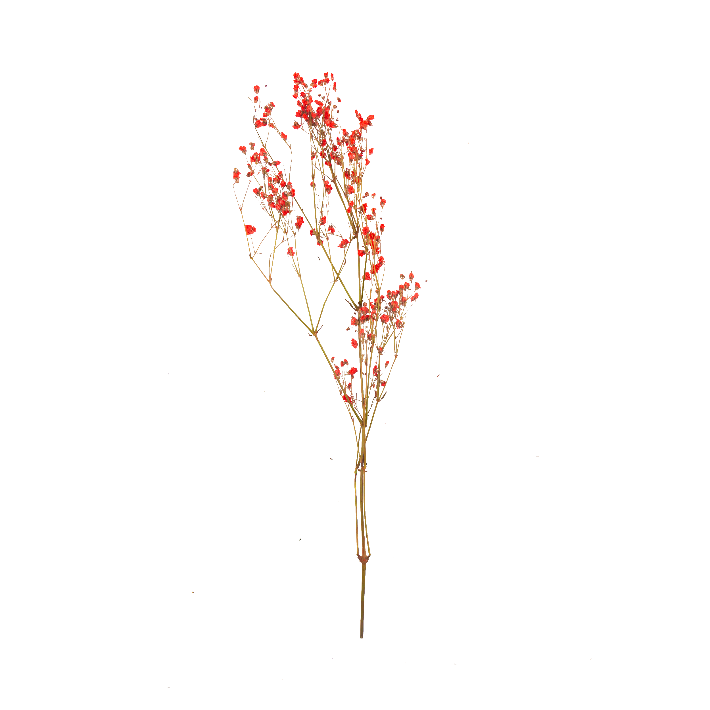
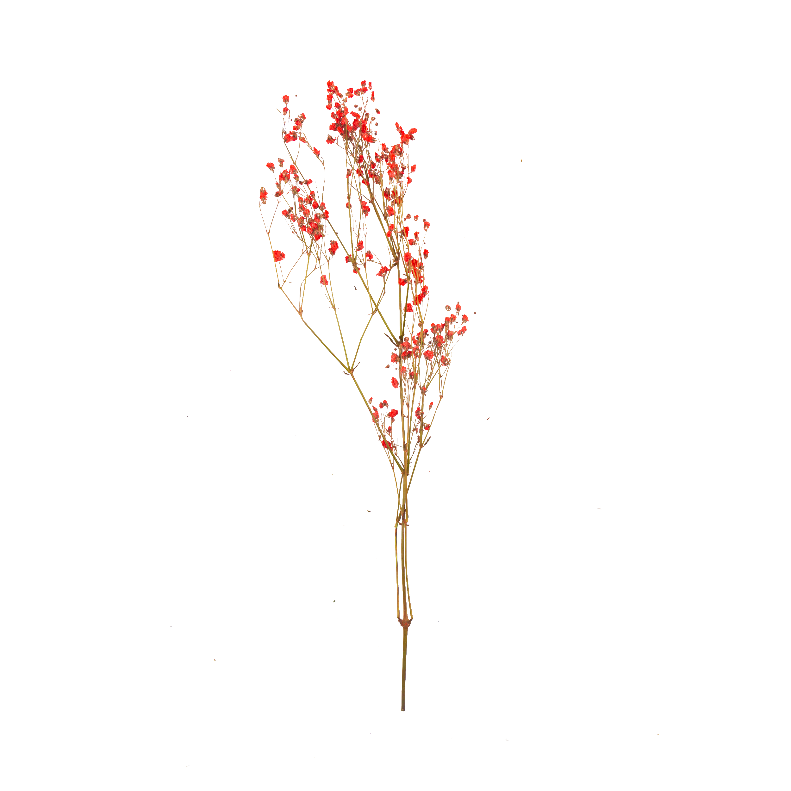

10ENE26
tres de la tarde
Centro de recepciones PK2
Av. los paredones 201
primera cuadra Nazca
 

¡Dimos el "sí"!
Queremos que seas testigo
de nuestro matrimonio civil.
10ENE26
tres de la tarde
Centro de recepciones PK2
Av. los paredones 201
primera cuadra Nazca